12306 提前 15 天放票；两段分开买，成都东换乘留 40 分钟以上。回程反着走：黄龙九寨站 → 成都东 → 西安北。
九黄机场海拔 3448 m，一落地就是高原，比高铁方案更容易头晕。机场在川主寺旁边，Day 4 从川主寺去机场只要 20 分钟，适合「去程高铁、回程飞机」的组合。
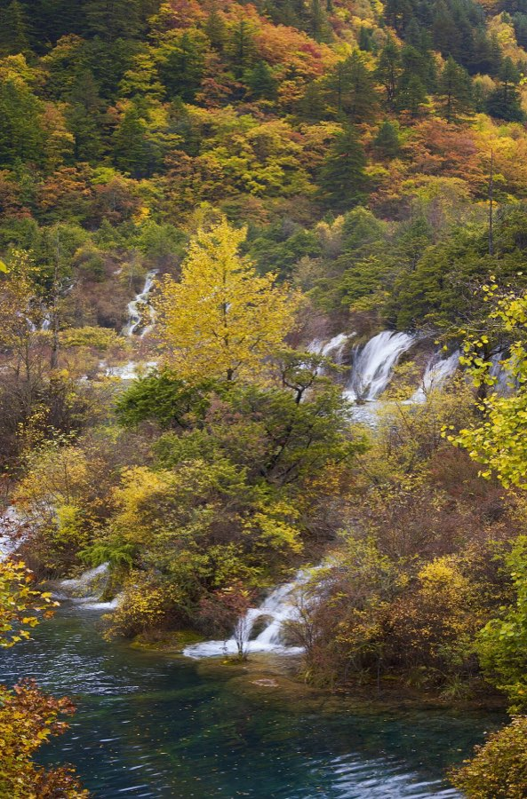
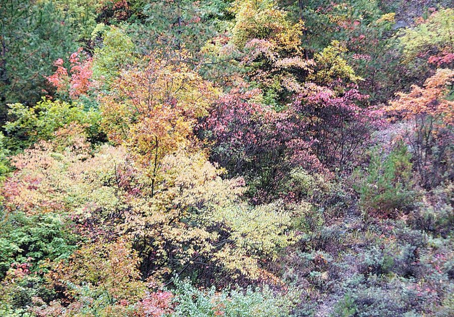
景区是个 Y 字：下面一竖是树正沟，上面左边是日则沟，右边是则查洼沟，交点叫诺日朗（换乘 + 吃饭）。只能坐观光车，走路只走栈道段。先坐到最远的长海，再一路往下玩，人少、不赶末班车。点下面的海子看照片和贴士。
海拔 3100 m · 则查洼沟尽头 · ①
九寨沟最高、最大、最深的海子，4.5 km 长，墨蓝色，背后是终年积雪的山。没有出水口，水从地下渗走。
贴士：早上第一批车到这里人最少。拍全景站在观景台左边；看完沿栈道往下走 1 km 到五彩池，20 分钟。
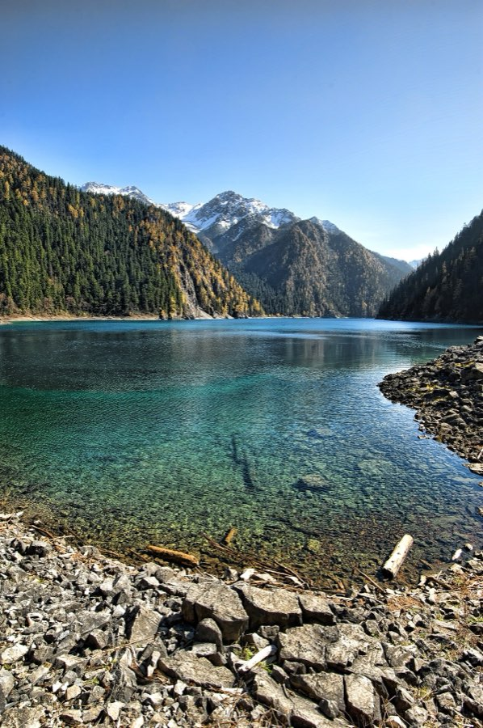
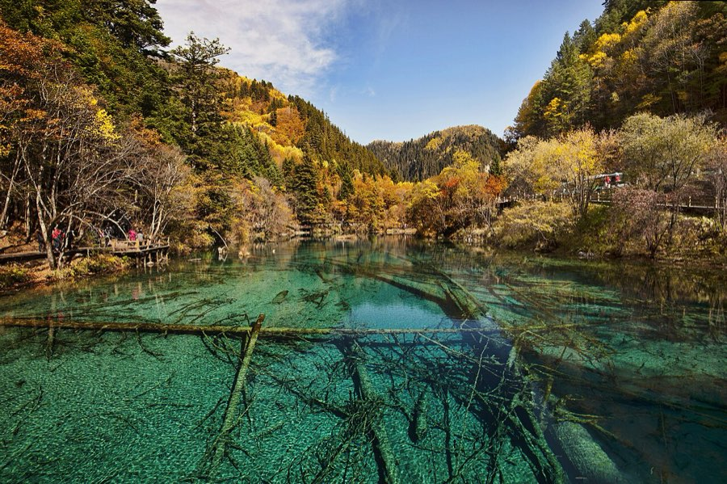
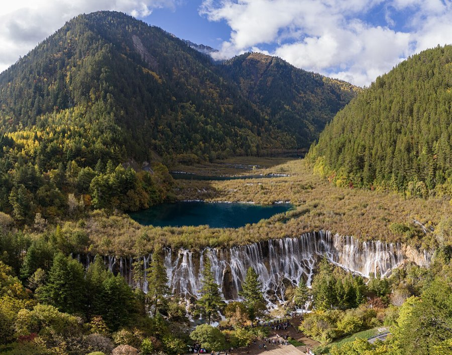
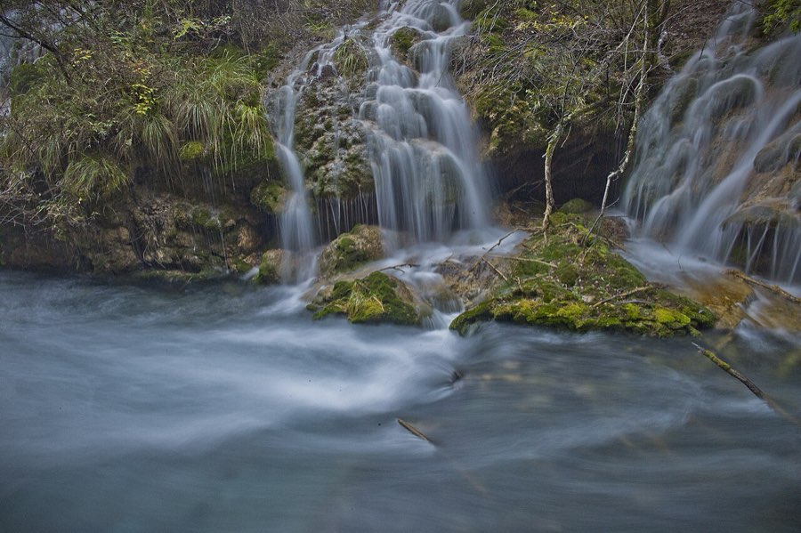
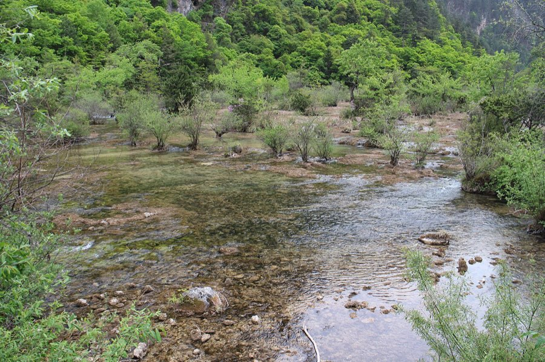
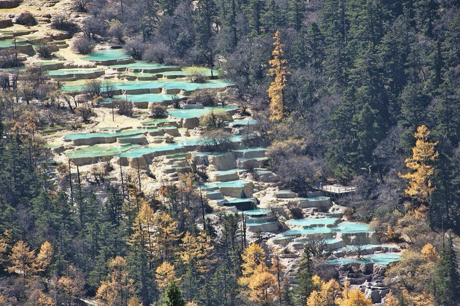
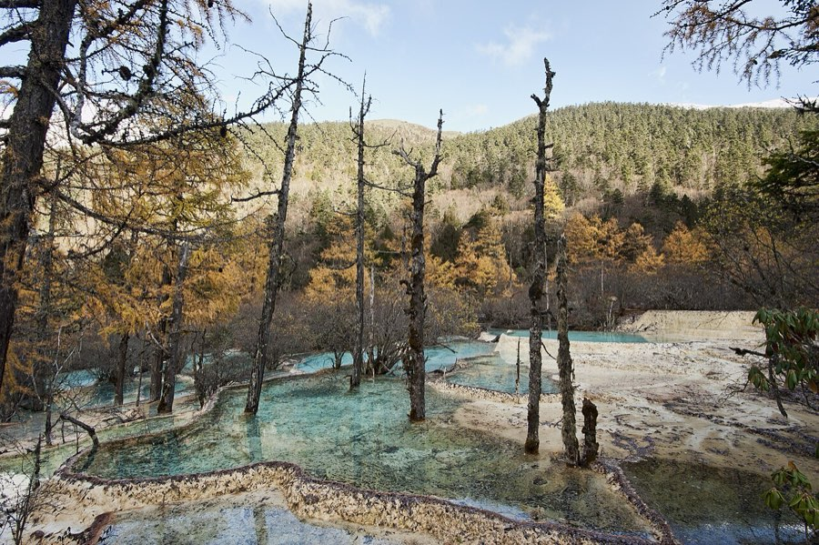
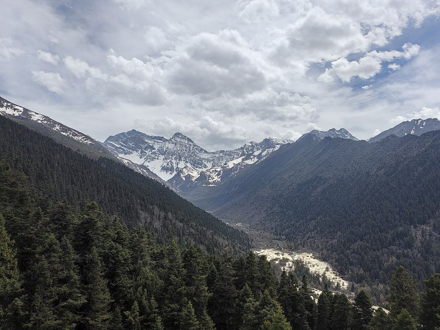
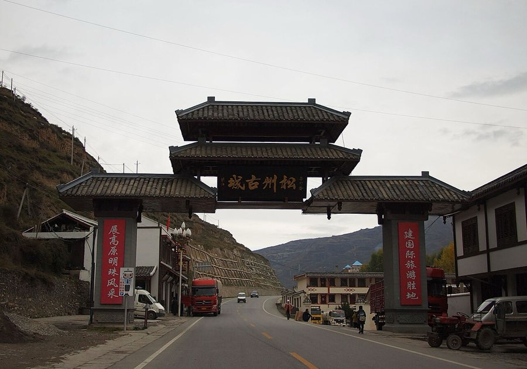
沟口怎么选：「彭丰村」离游客中心 1–2 km，步行 10–15 分钟，节假日首选，价格偏高；「漳扎镇」远 5–8 km，要打车，但便宜、选择多。不是节假日的话，选带接送的民宿都行。价格是 10 月的大致区间，以订房平台为准。
全勾完了，出发吧 🎒
| 项目 | 每人 | 合计 |
|---|---|---|
| 九寨沟 门票 + 观光车190 + 90，旺季官方价 | 280 | 560 |
| 黄龙 门票 + 索道上行 + 观光车170 + 80 + 20 | 270 | 540 |
| 往返大交通（高铁全程）西安北↔成都东 263 + 成都东↔黄龙九寨站 ≈150 + 直通车 51，往返 | 928 | 1,856 |
| Day 3 包车 沟口 → 黄龙 → 川主寺按 500 元/车估，2 人分摊 | 250 | 500 |
| 住宿 3 晚1 间 × 3 晚 × 500 元 | 750 | 1,500 |
| 吃饭 4 天每人每天 150 元 | 600 | 1,200 |
| 打车、零食、手信松潘古城打车、牦牛肉干 | 150 | 300 |
| 合计（2 人） | ≈3,228 | ≈6,456 |
门票按 2026 年旺季官方价；车票按常见价；住宿按两人一间；吃饭按每人每天 150 元。实际会上下浮动两三成。
早晚温差 15°C 以上，沟里常有小雨。穿法：速干内层 + 抓绒 + 羽绒或冲锋衣，下身一条厚一点的裤子就够，鞋要防水。紫外线很强，帽子墨镜防晒霜都要。
🎫 九寨沟：微信小程序「九寨沟旅游官方平台」（或「阿坝旅游网」），全网实名，现场不卖票。每天限 41000 人，10 月的票建议提前 7–14 天抢，国庆前后已经多次售罄；售罄后有候补。门票 190 + 观光车 90 = 280 元，另有 10 元自愿保险。
🎫 黄龙：「阿坝旅游网」小程序或「黄龙景区」公众号，提前一天以上预约。旺季 170 元（半价 85），索道上行 80 / 下行 40，景区观光车 20。
🚄 火车票：12306，提前 15 天放票。去程买「西安北 → 成都东」和「成都东 → 黄龙九寨站」两段。
🚌 直通车：黄龙九寨站出站现场买，或小程序「九旅悦行」查班次。
📣 彩林实况：公众号「九寨沟景区」、官网 jiuzhai.com，出发前看最近一次「彩林播报」。
门票与开放时间：九寨沟 2026 旺季票价（成都本地宝，2026-03）、黄龙管理局通告（澎湃，2026-05）、九寨沟景区官网。交通：黄龙九寨站换乘指南（四川在线）、景区直通车指南（本地宝）。彩林：2026 国庆后彩林最佳时间（新浪）。黄龙游览：黄龙 2026 行程规划（搜狐）。住宿、餐饮、避坑综合自小红书、知乎、马蜂窝、携程 2025–2026 年帖子。价格会变，以官方渠道为准。
实景照片来自 Wikimedia Commons：chensiyuan（五花海、长海、五彩池、诺日朗瀑布、树正沟 ×2、黄龙 ×2，CC BY-SA 4.0）、Yumeto（镜海、望龙坪，CC BY-SA 4.0）、Suicasmo（盆景滩，CC0）、lienyuan lee（彩林，CC BY 3.0）、rheins（松州古城，CC BY 3.0）、Dcpeets（日则沟，CC BY-SA 4.0）、Gear$Head（珍珠滩，CC BY-SA 3.0）。小人和地图是手绘风格示意，不按比例。